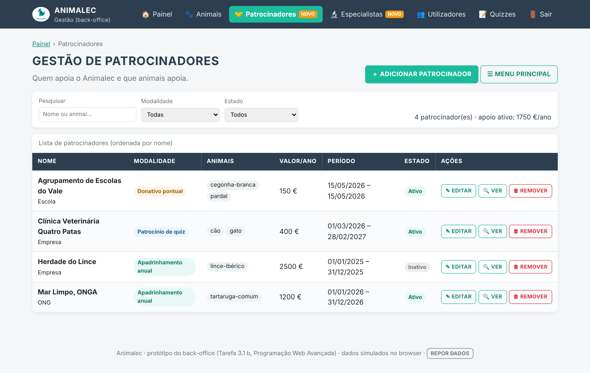
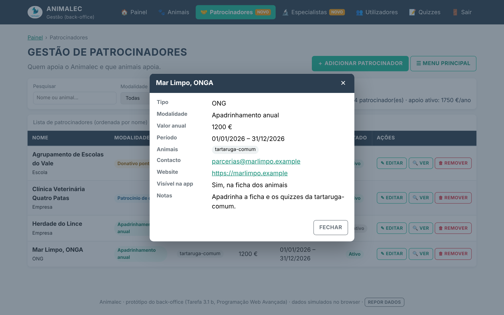
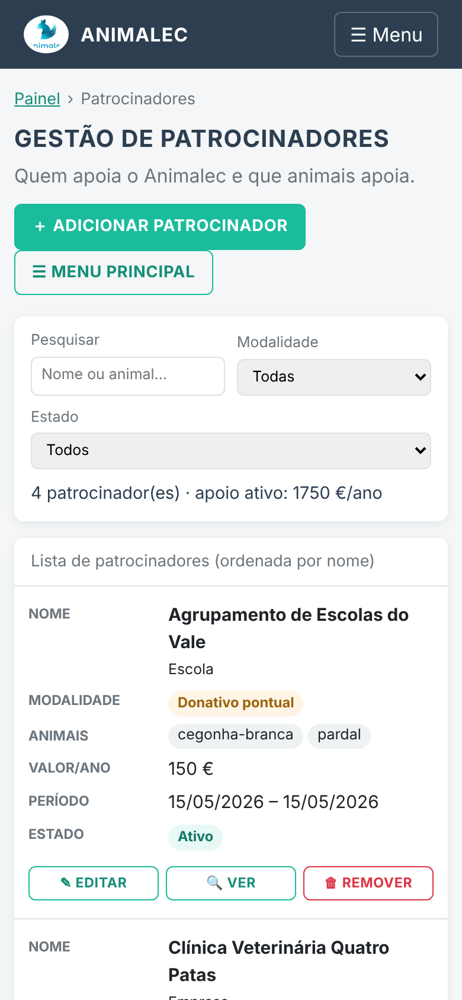
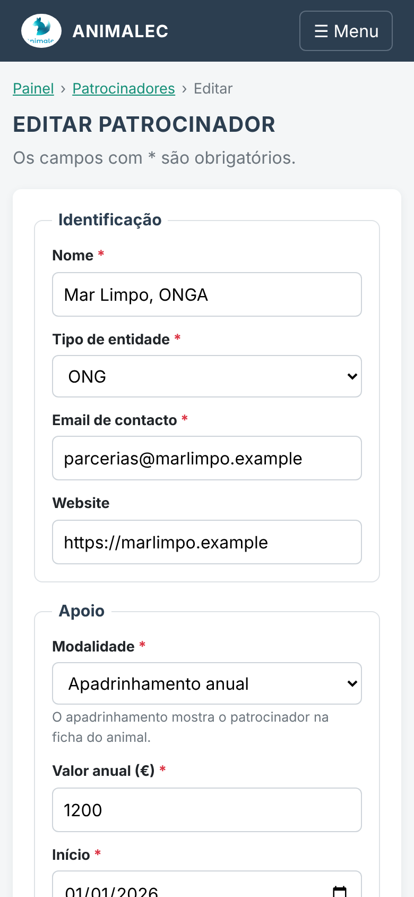
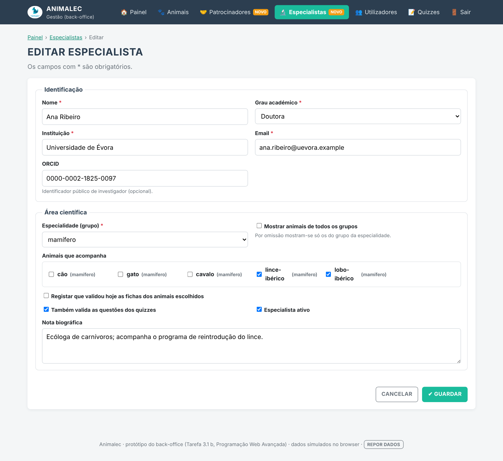
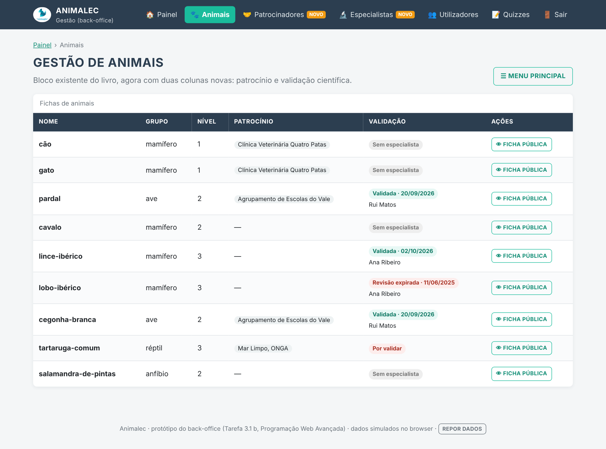
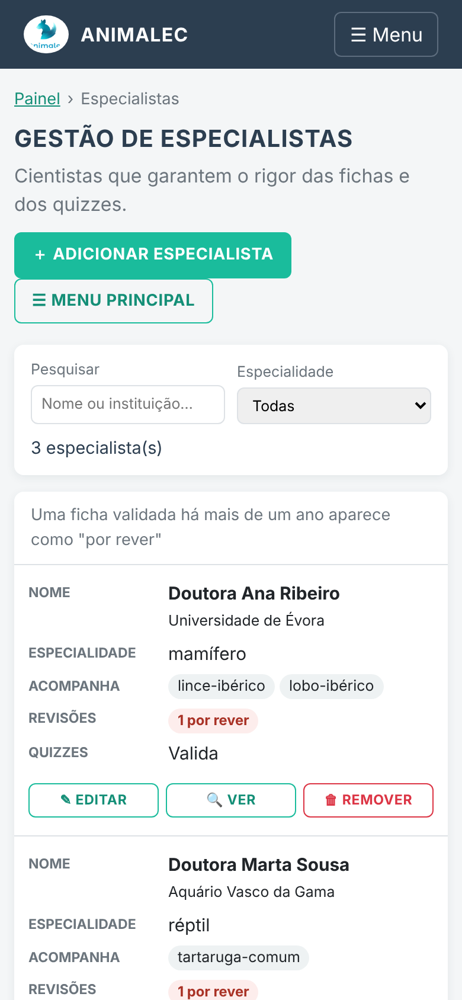
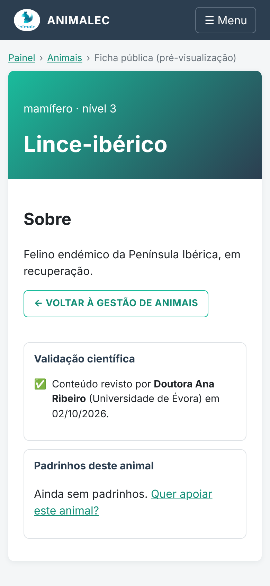

Mockup (alta fidelidade, estático) · Animalec, página de administração · Tarefa 3.1 b · mesmo conteúdo do wireframe, agora com cor, tipografia e ícones finais

Browser · lista com filtros, selos de modalidade e total de apoio ativo

Browser · janela "VER" (detalhe sem sair da lista)

Telemóvel · tabela em cartões

Telemóvel · formulário numa coluna

Browser · formulário de especialista (animais filtrados pela especialidade)

Browser · bloco Animais com as colunas novas de patrocínio e validação

Telemóvel · especialistas em cartões

Telemóvel · ficha pública com validação e padrinhos